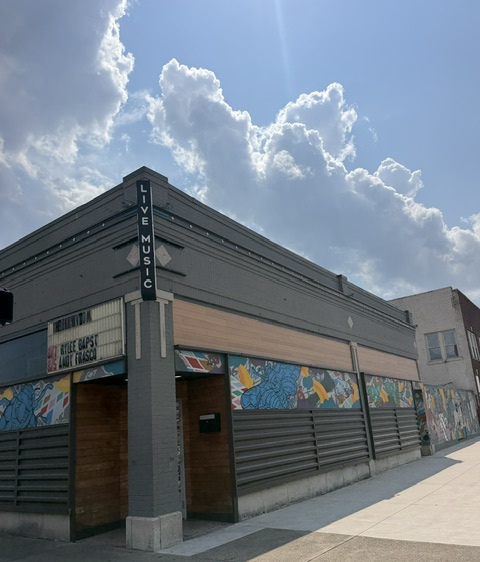
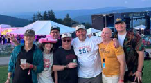
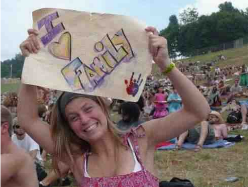
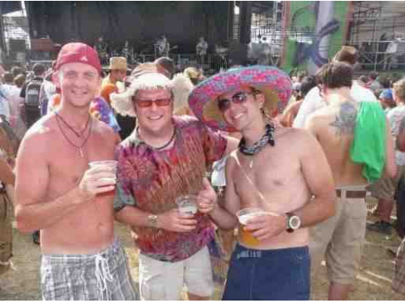
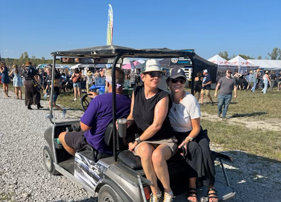
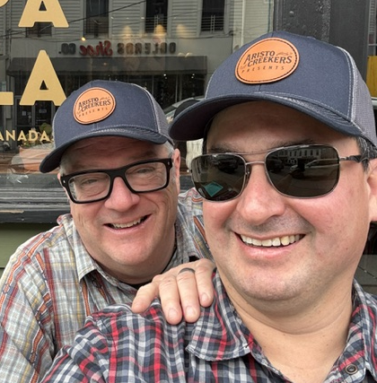
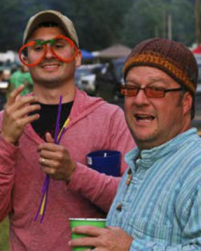
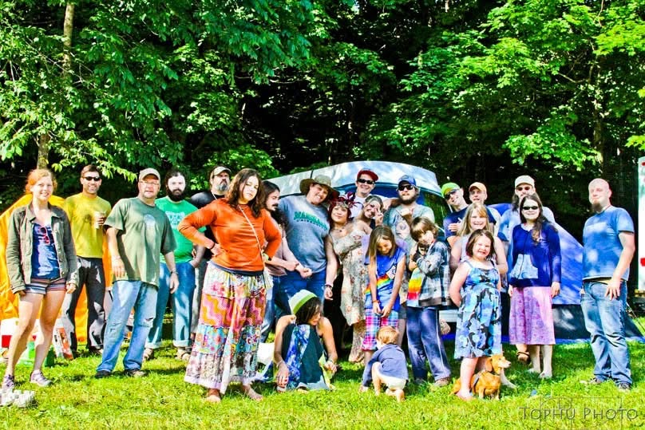

Community supported local venues
AristoCreekers
Find the venues locals love. Share your favorite hometown stage and the artists to look for so Creekers can discover real rooms, real shows, and the people keeping local music alive.
Quick access from the Creeker icon on your home screen.
What it is. AristoCreekers helps travelers find local music venues recommended by people who know the scene.
Why share. Your suggestion can help someone skip the generic tourist stop and find a real room, local artist, or music night worth remembering.
Share the creek
On The Road? A Creeker knows where to go.
Know a local stage, listening room, bar, outdoor spot, or music night worth exploring? Share the venue locals actually recommend, the kind of music people might hear, and any tip that helps another Creeker On The Road have a better night out.
- Recommend places you have actually visited.
- Focus on local or regional music.
- Tell music lovers where the good times happen.








Discover
Where should Creekers go hear music?
0 venues0 cities